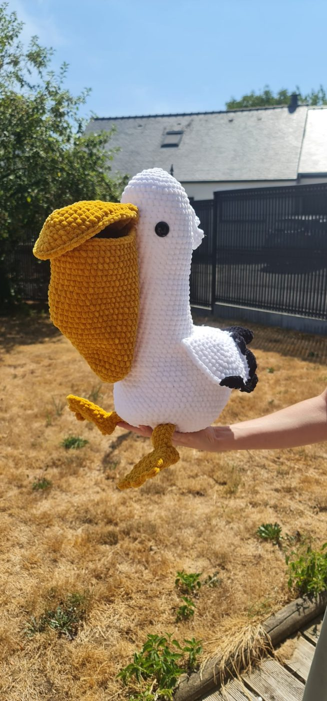

Des peluches au crochet qui ont une âme
Mailles et Bidouille, c'est un petit atelier où chaque peluche est crochetée à la main, une maille à la fois. Venez découvrir mon travail.

Un aperçu de l'atelier
Des peluches crochetées en fil doux, avec des détails brodés à la main. D'autres créations arrivent bientôt.

Les poulpes clowns
Un chapeau pointu, une collerette et des tentacules tout en couleurs.

Les tortues
Roses et bleues, avec une carapace qui contraste.

Pélican et tricératops
Les grands, qui ne passent jamais inaperçus.
Derrière chaque pelote, il y a une histoire
Je m'appelle Angèle, et le crochet est ma façon de ralentir et de créer des choses qui durent. Chaque peluche de Mailles et Bidouille est pensée et fabriquée à la main, avec des fils choisis avec soin.
Ici, pas de production en série : juste des créations uniques, faites avec patience, pour câliner et pour offrir.
Une question, une envie de peluche ?
Écrivez-moi, je vous réponds avec plaisir.